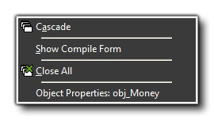

In this menu you find some typical commands to manage the different properties of the actual windows in the main GameMaker: Studio form:
- Cascade - Cascade all the windows such that each of them is partially visible.
- Show Compile Form - This will show the compile form in the IDE if you have previously closed it.
- Close All - Close all the property windows, asking the user whether or not to save any changes made.
- Properties - Open the properties window for the selected resource (This option may or may not be visible depending on the current resource selected).